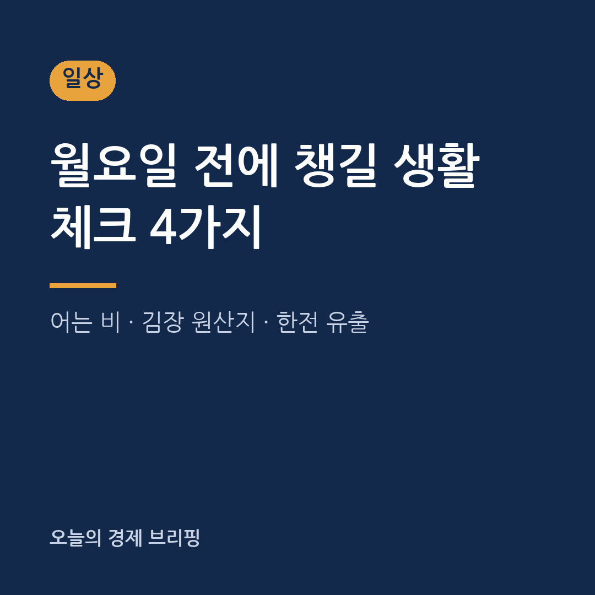

2026-11-22-1824-naver 발행 키트 · 이 페이지는 검색에 노출되지 않습니다.
제목
카테고리
일상태그
본문 (그림·표 포함)
휴대폰 블로그 앱에서는 그림이 같이 붙지 않을 수 있어요. 그때는 [글자만 복사] 후 아래 이미지를 저장해 [그래프1]·[표1] 자리에 첨부하세요.

일요일 저녁이 되면 다음 주 걱정이 슬슬 올라오죠. 월요일 아침 날씨도 신경 쓰이고, 김장 장보기도 해야 하고, 대출 이자도 마음에 걸리거든요.
오늘 나온 뉴스 중에서 이번 주 생활에 바로 닿는 네 가지만 골라 봤어요. 한눈에 볼 수 있게 표부터 붙여 둘게요.
이번 주 생활 체크표
| 언제 | 무엇을 | 이렇게 해요 |
|---|---|---|
| 23일(월) | 영하권 출근길 어는 비 | 평소보다 일찍 나서고 천천히 걷기 |
| 23일~12월 4일 | 김장철 수산물 원산지 특별점검 | 살 때 원산지 표시 확인하기 |
| 보도 기준 22일 | 한전 고객 개인정보 150여만건 유출 | 수상한 문자 링크는 누르지 않기 |
| 26일 | 한은 금통위, 0.25%p 인상 전망 | 변동금리 대출 이자 가늠해 보기 |
출처: 연합뉴스, 매일경제, 세계일보 보도
▶ 월요일 출근길에는 어는 비를 조심해요
23일 월요일은 전국이 대체로 흐리고, 대부분 지역에 비나 눈이 온다고 해요. 기온이 영하권인 곳에서는 '어는 비'가 내릴 수 있다는 예보가 나왔어요.
어는 비는 영하의 지면에 닿자마자 얼어붙는 비예요(기온이 0도 아래인 곳에서 내리는 비). 겉보기엔 그냥 젖은 길 같아도 빙판일 수 있으니, 평소보다 여유 있게 나서고 걸음은 천천히 가는 게 좋아요.
▶ 김장철 수산물 원산지, 점검이 시작돼요
해양수산부가 23일부터 다음 달 4일까지 김장철 수산물 원산지 표시를 특별점검한다고 해요. 김장 재료로 젓갈이나 생선류를 사시는 분들은 이 기간에 장을 볼 일이 많을 거예요.
점검이 있다고 해서 소비자가 할 일이 없는 건 아니에요. 살 때 원산지 표시가 눈에 보이는지, 가격표와 포장지의 표기가 같은지 한 번만 살펴봐도 충분해요.
▶ 한전 고객 정보가 유출됐다는 소식이에요
한국전력에서 이번에는 이용 고객의 개인정보가 새어 나갔다는 보도가 나왔어요. 앞서 직원 정보가 유출된 데 이어서라고 해요. 규모는 150여만 건이고, 주민등록번호와 계좌번호도 들어 있다고 전해졌어요.
아직 세부 경위와 후속 조치는 확인이 더 필요해요. 한전 이용 고객이라면 공식 안내가 나오는지 지켜보시고, 이런 때를 노린 사기 문자가 오기 쉬우니 문자 속 링크는 누르지 마세요.
의심스러운 연락이 오면 문자에 적힌 번호 말고, 한전 공식 채널에 직접 확인하는 게 가장 안전해요.
▶ 26일 금통위, 변동금리 대출 있다면 눈여겨봐요
26일에는 한국은행 금융통화위원회(기준금리를 정하는 회의)가 열려요. 한은 출신 전문가들은 고물가가 이어지고 반도체 호황으로 경기도 예상보다 강해서, 기준금리를 0.25%포인트 올릴 것으로 내다봤어요.
실제로 오르면 3.25%가 된다는 계산이에요. 물론 아직은 전망일 뿐이고 결과는 26일에 나와요.
변동금리 대출이 있다면 이자 부담이 어떻게 달라질지 미리 가늠해 보세요. 신용점수에 따라 대출이자가 크게 벌어질 수 있다는 기사도 함께 나왔는데, 이참에 내 신용점수도 한 번 확인해 두면 좋아요.
▶ 한 줄 정리
월요일 아침엔 빙판 조심, 김장 장 볼 땐 원산지 표시 확인, 한전 고객이라면 수상한 문자 조심, 26일 금리 결정은 챙겨 보기예요.
여러분은 이번 주 가장 신경 쓰이는 게 어느 쪽인가요? 댓글로 알려 주세요.
출처 (본문 맨 아래에 붙여넣기 권장)
- 연합뉴스, 월요일 전국에 비·눈…영하권 출근길 '어는 비' 주의, https://www.yna.co.kr/view/AKR20261122039200530 - 연합뉴스, 해수부, 내달 4일까지 김장철 수산물 원산지 표시 특별점검, https://www.yna.co.kr/view/AKR20261120134300030 - 연합뉴스, 한전, 고객 등 개인정보 150여만건 유출…주민·계좌번호도 포함, https://www.yna.co.kr/view/AKR20261122042800003 - 매일경제, "고물가에 추가 긴축 유력 … 26일 기준금리 0.25%P↑", https://www.mk.co.kr/news/economy/12215695 - 세계일보, 물가 상승·성장률 상향 조정… 한은, 기준금리 3.25%로 올리나, https://www.segye.com/newsView/20261122507397 - 매일경제, ‘등급’ 아닌 ‘점수제’로 평가되는 내 신용…점수에 따른 대출이자 격차는? [최병일의 금융 리터러시 2.0], https://www.mk.co.kr/news/economy/12215658